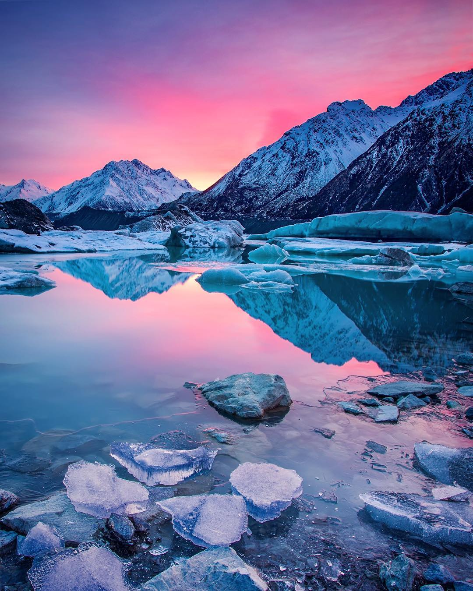
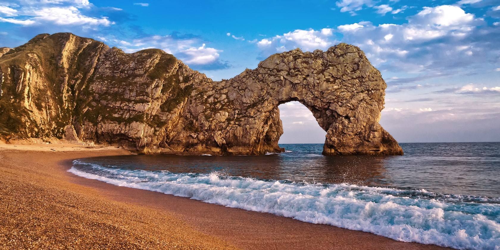
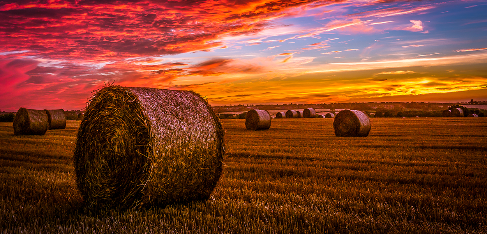

Bora Bora es una de las Islas de Sotavento, de las Islas de la Sociedad, en la Polinesia Francesa. La verdadera ortografía de su nombre era Pora Pora (“primera nacida” en tahitiano). Se la llama también May ti pora (“creada por dioses”).
Se trata de una isla del tipo atolón, con una zona central montañosa que está rodeada por una barrera de arrecife coralina y de islotes. Se encuentra en las llamadas Islas de la Sociedad, que forman parte de la Polinesia Francesa; y se encuentra situada al noroeste de Tahití, a unos 260 km al noroeste de Papeete - Tahití. También tiene a su alrededor diversos motus, que son pequeños islotes alargados que suelen tener cierta anchura y vegetación. Uno de los motus más bellos y fotografiados de la Polinesia es el motu Tapu, sobre todo las que tomaron antes de que un huracán se llevase parte de las lenguas de arena que tenía en sus extremos. En 2012 la población era de 9858 habitantes. Alberga el aeropuerto de Bora Bora.
Funchal es la capital de la isla de Madeira, una de las regiones autónomas de la república de Portugal (la otra es las Azores). Además de la capitalidad, la ciudad se caracteriza por ser el mayor centro urbano de la isla. Funchal es la ciudad más prominente de la Portugal insular. Área Conurbana de Funchal: (Funchal / Câmara de Lobos / Machico / Santa Cruz / Caniço / Ribeira Brava).
Forman parte de la región autónoma de Madeira el municipio y la ciudad de Funchal, incluidas las Islas Salvajes, reserva natural situada a unos 280 kilómetros al sur.
Trollolololololololo hahahahaha hahahahaha oyoyoy yeyeye